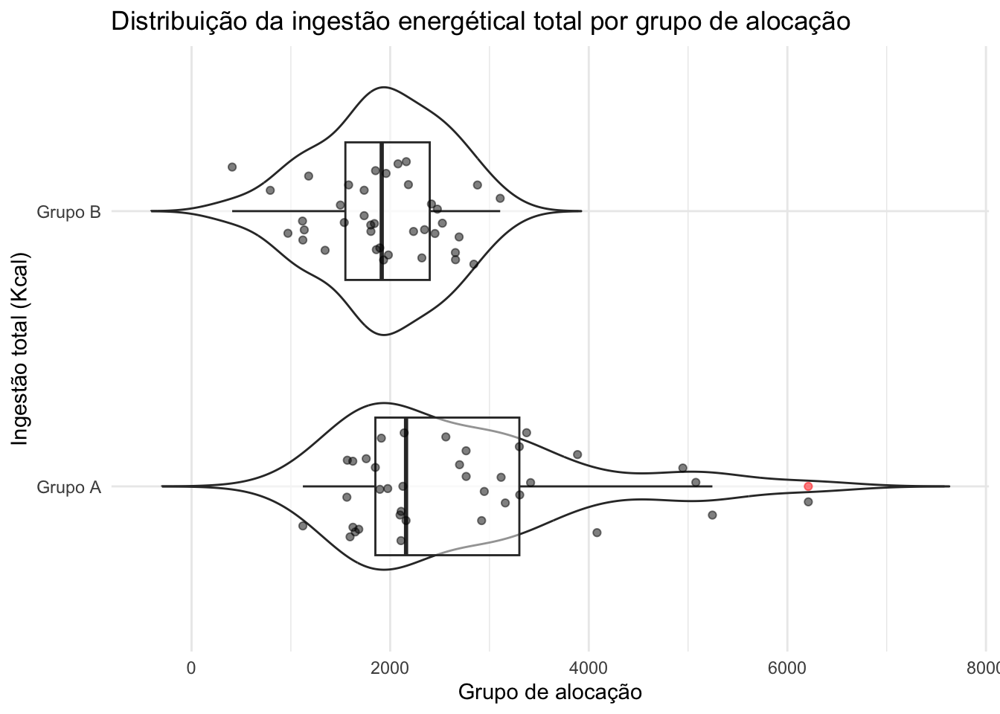
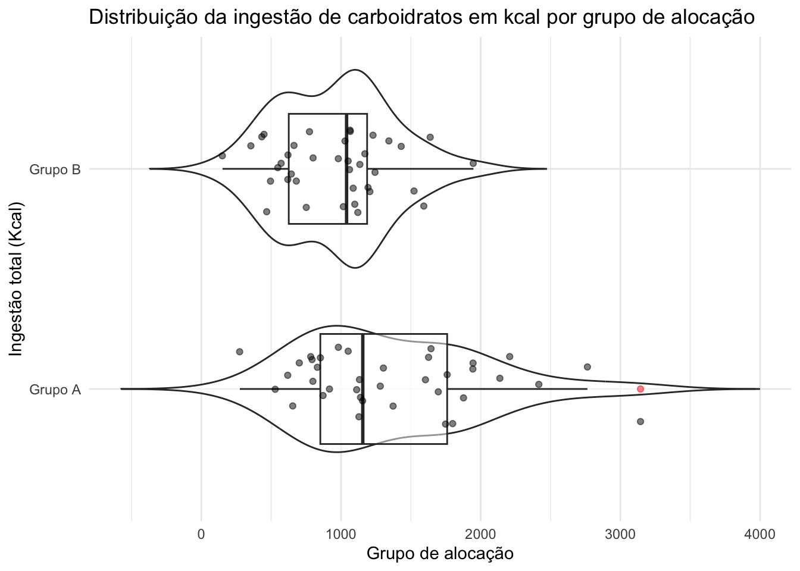
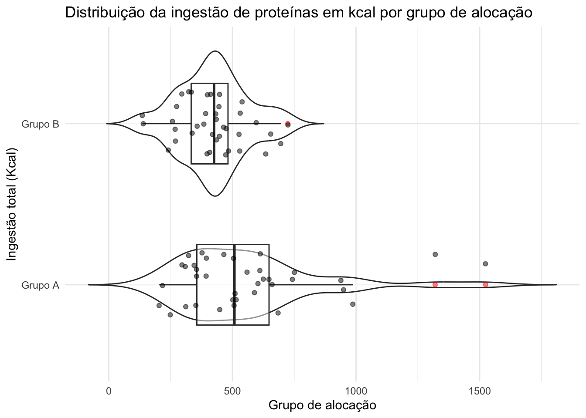
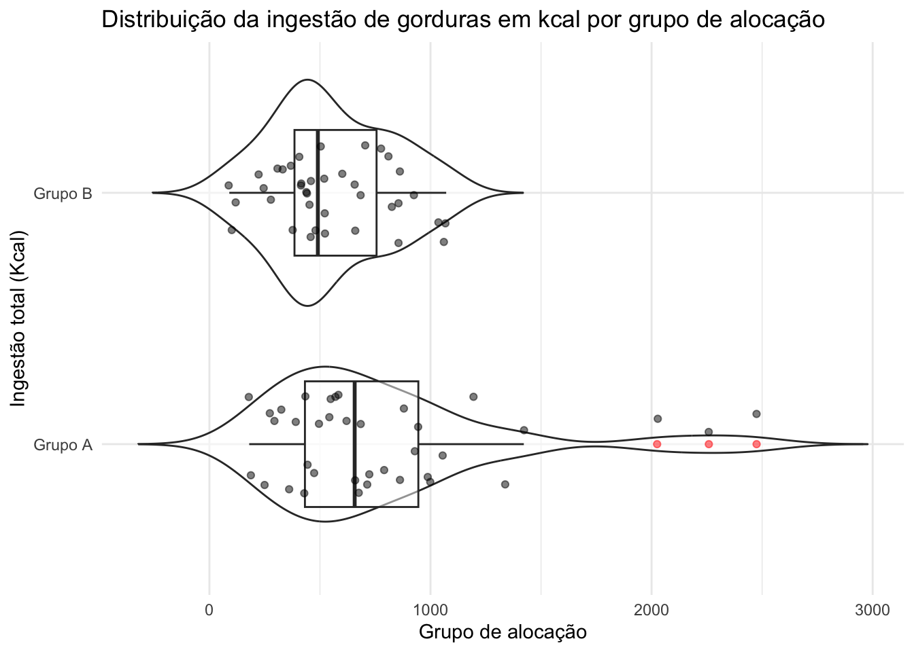

All outcomes
Baseline characteristics
Categorical variables
Code
baseline <- data_model %>%
filter(visit == 1)
summ_cat <- baseline %>%
summarize_categorical(use_labels = TRUE, group_col = "allocation_group") %>%
filter(Level == 1) %>%
select(Variable, Freq, Percent, allocation_group) %>%
pivot_wider(
names_from = allocation_group,
values_from = c(Freq, Percent)
)
summ_cat <- summ_cat %>%
select(
Variable,
`Grupo Placebo (N)` = `Freq_Grupo A`,
`% (A)` = `Percent_Grupo A`,
`Grupo Eclipta (N)` = `Freq_Grupo B`,
`% (B)` = `Percent_Grupo B`)
summ_cat# A tibble: 8 × 5
Variable `Grupo Placebo (N)` `% (A)` `Grupo Eclipta (N)` `% (B)`
<chr> <int> <dbl> <int> <dbl>
1 record_id 1 2.7 0 0
2 visit 37 100 38 100
3 hypertension 6 16.2 12 31.6
4 hypercholesterolemia 25 67.6 21 55.3
5 hypertrigliceridemia 16 43.2 20 52.6
6 insulin 9 24.3 9 23.7
7 drugs_w_loss 8 21.6 11 28.9
8 drugs_w_gain 1 2.7 3 7.9Code
baseline %>% select(!where(is.numeric), -record_id, -visit) %>% compare_groups(group_col = "allocation_group")| Hypothesis Test Results | |||
|---|---|---|---|
| Comparison of allocation_group | |||
| Variable | Test Type | Test Statistic | P-value |
| Intervenção completa? | Chi-squared test | 0.18 | 0.6715 |
| Sexo | Fisher's exact test | NA | 0.1908 |
| hypertension | Chi-squared test | 1.66 | 0.1981 |
| hypercholesterolemia | Chi-squared test | 0.73 | 0.3915 |
| hypertrigliceridemia | Chi-squared test | 0.34 | 0.5602 |
| insulin | Chi-squared test | 0.00 | 1.0000 |
| drugs_w_loss | Chi-squared test | 0.22 | 0.6428 |
| drugs_w_gain | Fisher's exact test | NA | 0.6148 |
Numerical variables
Code
summ_num <- baseline %>%
summarize_numerical(use_labels = FALSE, group_col = "allocation_group") %>%
select(-N) %>%
pivot_wider(
names_from = allocation_group,
values_from = `Mean (95% CI)`
)
summ_num %>% print(n = Inf)# A tibble: 36 × 3
Variable `Grupo A` `Grupo B`
<chr> <chr> <chr>
1 abdomen 103.4 (101.2–105.6) 101.9 (99.5–104.3)
2 age 39.9 (37.1–42.7) 41.3 (37.6–45)
3 alcohol_dose 4.9 (1.6–8.2) 3.4 (1.3–5.5)
4 bmi 33 (32.3–33.7) 33.3 (32.6–34)
5 carbs_kcal 1367.5 (1158.4–1576.6) 954.3 (827.2–1081.4)
6 compliance_score_visit NaN (NaN–NaN) NaN (NaN–NaN)
7 crp_log 1.7 (1.4–2) 1.9 (1.6–2.2)
8 crp_raw 6.5 (4.4–8.6) 8.3 (5–11.6)
9 dass_score_anxiety 10 (6.6–13.4) 8.1 (5.7–10.5)
10 dass_score_depression 12.1 (8.5–15.7) 12.8 (9.7–15.9)
11 dass_score_stress 13.8 (10.2–17.4) 15.6 (12.1–19.1)
12 duration_difference 0 (0–0) 0 (0–0)
13 ecap_score 17.7 (14.9–20.5) 14.9 (12.4–17.4)
14 evs_score 130.8 (75.7–185.9) 145.3 (93–197.6)
15 fat_kcal 784.2 (609.7–958.7) 548.8 (464.2–633.4)
16 handgrip 33.4 (30.7–36.1) 30.3 (27.9–32.7)
17 kcal 2712.2 (2328.1–3096.3) 1924.6 (1725.9–2123.3)
18 labs_alkp 67.7 (63.2–72.2) 72.4 (64.7–80.1)
19 labs_alt 30.8 (25.4–36.2) 26.2 (22.8–29.6)
20 labs_ast 24.8 (22.3–27.3) 23.9 (22.1–25.7)
21 labs_cholesterol 191.2 (180.2–202.2) 190.5 (180.8–200.2)
22 labs_ggt 39.8 (21–58.6) 35.9 (27.5–44.3)
23 labs_glucose 86.1 (79.2–93) 86.4 (78.1–94.7)
24 labs_hba1c 5.5 (5.2–5.8) 5.4 (5.1–5.7)
25 labs_hdl 52.1 (48–56.2) 55.8 (51–60.6)
26 labs_homa_ir 3.5 (2.1–4.9) 2.8 (2.4–3.2)
27 labs_insulin 17.1 (8.8–25.4) 13.6 (11.8–15.4)
28 labs_ldl 115.5 (104.9–126.1) 111.7 (102.7–120.7)
29 labs_quick_index 0.3 (0.3–0.3) 0.3 (0.3–0.3)
30 labs_triglycerides 128.7 (108.8–148.6) 126.7 (107.6–145.8)
31 mean_bp_mean 89.6 (86.2–93) 92.4 (89.1–95.7)
32 phase_angle 6.6 (6.3–6.9) 6.3 (6–6.6)
33 protein_kcal 560.5 (467.6–653.4) 421.5 (377.8–465.2)
34 reactance 60.2 (57.6–62.8) 59.7 (56.5–62.9)
35 resistance 524.5 (504.3–544.7) 545 (523.6–566.4)
36 whoqol_score_overall 58.1 (50.7–65.5) 58.6 (52.1–65.1) Code
baseline %>% select(allocation_group, where(is.numeric), -compliance_score_visit, -duration_difference) %>%
compare_groups(group_col = "allocation_group")| Hypothesis Test Results | |||
|---|---|---|---|
| Comparison of allocation_group | |||
| Variable | Test Type | Test Statistic | P-value |
| Idade | t-test | -0.58 | 0.5641 |
| Qualidade de vida geral | t-test | -0.09 | 0.9295 |
| Resultado DASS-21 Depressão | t-test | -0.30 | 0.7617 |
| Resultado DASS-21 Ansiedade | t-test | 0.92 | 0.3585 |
| Resultado DASS-21 Stress | t-test | -0.72 | 0.4737 |
| Resultado ECAP | t-test | 1.48 | 0.1424 |
| Circunferência abdominal (cm) | t-test | 0.89 | 0.3774 |
| IMC (Kg/m²) | t-test | -0.75 | 0.4541 |
| Média MAP | t-test | -1.15 | 0.2551 |
| Resistência (Ω) | t-test | -1.37 | 0.1763 |
| Reatância (Ω) | t-test | 0.24 | 0.8077 |
| Ângulo de fase (º) | t-test | 1.56 | 0.1240 |
| handgrip | t-test | 1.70 | 0.0927 |
| Escore EVS | t-test | -0.37 | 0.7103 |
| alcohol_dose | t-test | 0.75 | 0.4551 |
| Kcal de carboidratos | t-test | 3.31 | 0.0016 |
| Kcal de proteína | t-test | 2.66 | 0.0105 |
| Kcal de lipídeo | t-test | 2.38 | 0.0210 |
| Kcal total | t-test | 3.57 | 0.0008 |
| Proteína C Reativa (mg/L) | t-test | -0.87 | 0.3852 |
| AST (U/L) | t-test | 0.60 | 0.5495 |
| ALT (U/L) | t-test | 1.43 | 0.1589 |
| GGT (U/L) | t-test | 0.37 | 0.7103 |
| Fosfatase alcalina (U/L) | t-test | -1.03 | 0.3076 |
| Colesterol total (mg/dL) | t-test | 0.10 | 0.9241 |
| LDL (mg/dL) | t-test | 0.53 | 0.5954 |
| Hemoglobina A1c (%) | t-test | 0.63 | 0.5296 |
| Triglicerídeos (mg/dL) | t-test | 0.14 | 0.8858 |
| HDL (mg/dL) | t-test | -1.15 | 0.2523 |
| Glicemia de jejum (mg/dL) | t-test | -0.06 | 0.9512 |
| Insulina (uIU/mL) | t-test | 0.81 | 0.4209 |
| HOMA-IR | t-test | 0.86 | 0.3963 |
| Quick Index | t-test | -0.17 | 0.8650 |
| Log PCR | t-test | -0.97 | 0.3363 |
Group differences
Energy intake
Code
ggplot(data = baseline, aes(x = allocation_group, y = kcal)) +
geom_violin(alpha = 0.5, trim = FALSE) +
geom_boxplot(width = 0.5, outlier.colour = "red", alpha = 0.5) +
geom_jitter(width = 0.2, alpha = 0.5) +
coord_flip() +
labs(
title = "Distribuição da ingestão energétical total por grupo de alocação",
x = "Ingestão total (Kcal)",
y = "Grupo de alocação"
) +
theme_minimal()
Code
ggplot(data = baseline, aes(x = allocation_group, y = carbs_kcal)) +
geom_violin(alpha = 0.5, trim = FALSE) +
geom_boxplot(width = 0.5, outlier.colour = "red", alpha = 0.5) +
geom_jitter(width = 0.2, alpha = 0.5) +
coord_flip() +
labs(
title = "Distribuição da ingestão de carboidratos em kcal por grupo de alocação",
x = "Ingestão total (Kcal)",
y = "Grupo de alocação"
) +
theme_minimal()
Code
ggplot(data = baseline, aes(x = allocation_group, y = protein_kcal)) +
geom_violin(alpha = 0.5, trim = FALSE) +
geom_boxplot(width = 0.5, outlier.colour = "red", alpha = 0.5) +
geom_jitter(width = 0.2, alpha = 0.5) +
coord_flip() +
labs(
title = "Distribuição da ingestão de proteínas em kcal por grupo de alocação",
x = "Ingestão total (Kcal)",
y = "Grupo de alocação"
) +
theme_minimal()
Code
ggplot(data = baseline, aes(x = allocation_group, y = fat_kcal)) +
geom_violin(alpha = 0.5, trim = FALSE) +
geom_boxplot(width = 0.5, outlier.colour = "red", alpha = 0.5) +
geom_jitter(width = 0.2, alpha = 0.5) +
coord_flip() +
labs(
title = "Distribuição da ingestão de gorduras em kcal por grupo de alocação",
x = "Ingestão total (Kcal)",
y = "Grupo de alocação"
) +
theme_minimal()